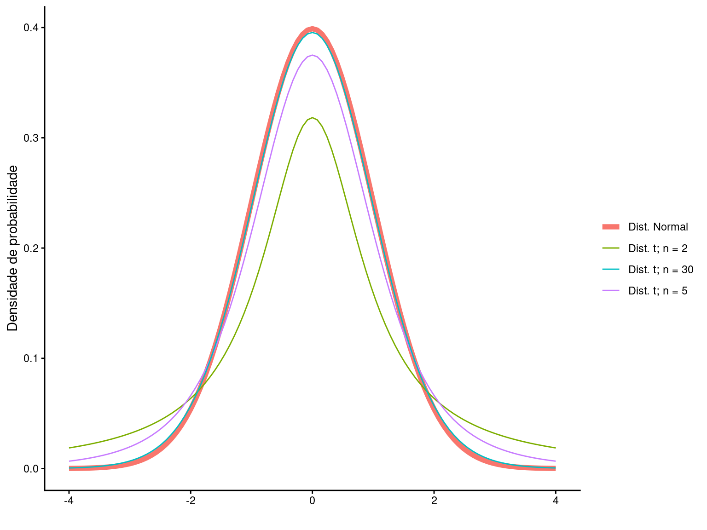

library(tidyverse)
library(gt)Comparando médias: teste t de Student
Teste t de Student para comparação de médias, abrangendo uma amostra, grupos independentes e medidas pareadas.
Pacotes, funções e base de dados utilizadas no capítulo
O modelo normal de probabilidades não é a melhor aproximação para a distribuição das médias amostrais quando não conhecemos \(\mu\) e \(\sigma\) e/ou quando o tamanho amostral \(n\) é pequeno. Nesta situação, a distribuição t de Student é mais apropriada para o cálculo do intervalo de confiança. Da mesma forma, o teste \(Z\) assume que a distribuição das médias amostrais é normalmente distribuída e que a variância populacional \(\sigma\) seja conhecida, uma informação que não temos na prática científica.
O teste t de Student é utilizado em substituição ao teste \(Z\) quando \(\sigma\) é desconhecido e/ou o tamanho amostral é pequeno. A lógica do teste é a mesma apresentada discutida no teste \(Z\), porém estabelece que a distribuição das médias amostrais é melhor descrita pela distribuição \(t\) e não pela distribuição normal.

1 Teste t para uma média populacional
Considere um exemplo simples. Dados do Banco Central do Brasil dizem que moedas de \(R\$ 0,10\) da segunda geração pesam 4.8 gramas. Você tem \(8\) moedas no bolso e resolve testar essa afirmação pesando cada moeda. Os pesos obtidos são: \(X = 5.1, 5, 4.8, 5, 5, 4.9, 4.9, 4.7\).
Inicialmente, devemos estabelecer nossa hipótese nula (\(H_0\)), nossa hipótese alternativa (\(H_a\)) e o nível se significância \(\alpha\). Iremos estabelecer \(\alpha = 0,05\) e as hipóteses como:
\(H_0: \mu = 4.8\) gramas
\(H_a: \mu \ne 4.8\) gramas
Como não conhecemos \(\sigma\) e temos uma amostra pequena, a posição das médias amostrais seguirá uma distribuição \(t\) de Student e a estatística do teste será:
\[t = \frac{\overline{X} - \mu}{s_{\overline{X}}}\]
sendo o erro padrão amostral obtido por:
\[s_{\overline{X}} = \frac{s}{\sqrt{n}}\]
O cálculo de \(t\) é muito similar ao escore \(Z\). No entanto, substituímos \(\sigma\) por \(s\). As distribuições de \(t\) e de \(Z\) são muito similares. Entretanto, para amostras pequenas e quando \(\sigma\) é desconhecido, a curva de \(t\) nos fornece uma melhor estimativa das probabilidades associadas a distribuição das médias amostrais.
Para este exemplo, temos uma amostra de tamanho \(n = 8\) com média \(\overline{X} = 4.925\)g e desvio padrão \(s = 0.13\)g. O valor de \(t\) pode ser calculado por:
\[t_{c} = \frac{\overline{X} - \mu}{s_{\overline{X}}} = \frac{\overline{X} - \mu}{\frac{s}{\sqrt{n}}} = \frac{4.925 - 4.8}{\frac{0.13}{\sqrt{8}}} = 2.76\]
Assim como fizemos para a distribuição \(Z\), devemos encontrar a probabilidade de obtermos um valor tão ou maior que o módulo de \(t_c\). Na figura abaixo, nosso resultado fica:

A probabilidade de encontrarmos um valor de \(t_c\) tão ou mais extremo segundo a hipótese nula foi de \(p = 0.028\). Uma vez que este valor é menor que o nível crítico \(\alpha = 0,05\), concluímos que existe evidência suficiente para rejeitar \(H_0\) e aceitar a hipótese alternativa de que as moedas de \(10\) centavos não provém de uma população estatística com \(\mu = 4,8\) gramas. Nossa conclusão é portanto, que as moedas de \(R\$ 0,10\) são mais pesadas que \(4,8\) gramas.
Terste t no R
t.test(X, mu = 4.8)
One Sample t-test
data: X
t = 2.7584, df = 7, p-value = 0.02816
alternative hypothesis: true mean is not equal to 4.8
95 percent confidence interval:
4.817844 5.032156
sample estimates:
mean of x
4.925 Nos comandos acima, \(X\) é a amostra e o argumento mu representa a expectativa sobre a média populacional segundo \(H_0\). Como resultados temos:
a indicação de que fizemos um teste \(t\) para uma amostra:
One Sample t-test;o valor de \(t\) calculado:
t = 2.7584;os graus de liberdade:
df = 8 - 1 = 7; eo valor de
p = 0.028.
A saída da função apresenta ainda o valor da média amostral (\(\overline{X} = 4.925\)) e o intervalo de confiança a \(95\%\) (4.817844 - 5.032156).
2 Graus de liberdade
A distribuição \(t\) como várias outras distribuições amostrais utilizadas em inferência estatística, muda seu formato em função do que chamamos de graus de liberdade (\(gl\)). Os graus de liberdade têm relação com o tamanho amostral. No caso do teste \(t\) para \(1\) amostra, esta relação é simplesmente: \(gl = n-1\).
À medida que os graus de liberdade aumentam, o formato da distribuição \(t\) se assemelha ao formato da distribuição Normal padronizada. De fato, para graus de liberdades altos (ex. \(n \ge 30\)), os formatos das distribuições \(Z\) e \(t\) são praticamente indistinguíveis. Na prática, isto faz que as distribuição \(Z\) raramente seja utilizada.

3 Probabilidades no teste \(t\) de Student: a tabela \(t\)
A rejeição uo aceitação da hipótese nula em um teste \(t\) pode ser feita por meio da obtenção do valor de p ou pela comparação do \(t\) calculado com valores críticos de referência para determinado nível de significância. O primeiro caso foi o que apresentamos acima e depende de um software estatístico para obtermos valores exatos de \(p\). O segundo caso, pode ser feito com auxílio da Tabela \(t\), em que limites críticos de \(t\) são disponibilizados para diferentes níveis de significância e graus de liberdade.
Atualmente, o uso da tabela \(t\) têm finalidade em grande parte didática e, por este motivo, vamos apresentá-lo aqui rapidamente. No entanto, fora da sala de aula, o teste \(t\) será invariavelmente conduzido por meio de um software estatístico este método que permitirá a obtenção do valor exato de \(p\).
Na Tabela t, a primeira coluna mostra os graus de liberdade de \(1\) a \(120\). O cabeçalho da tabela de \(90\%\) a \(0,1\%\) mostra a área na distribuição de \(t\) nas caldas inferior e superior.
Vamos retornar ao exemplo da moedas de \(R\$0,10\) para exemplificar sua utilização. Neste exemplo a tinhamos \(8\) (\(gl = 7\) graus de liberdade) e o teste foi feito com \(\alpha =0,05\). Se buscarmos na linha \(gl = 7\) e a coluna \(5\%\) (\(\alpha = 0,05\)), encontraremos o valor \(t = 2,3646\). Este é o chamado \(t\) crítico (\(t_{crítico}\)). Acima deste valor e abaixo de sua contraparte negativa temos exatamente \(5\%\) da área na disribuição \(t\). Deste modo, qualquer valor calulado maior que \(t_{crítico}\) estará mais para a extremidade da distribuição e consequentemente estará associado a menores valores de probabilidade. Neste sentido:
\(t_{calculado} \ge t_{crítico}\) leva a rejeição de \(H_0\)
\(t_{calculado} < t_{crítico}\) leva a aceitação de \(H_0\)
O resultado do teste estatístico em nosso exemplo foi \(t_c = 2.76\) que é maior que \(2,3646\). Isto nos leva à mesma decisão anterior (rejeitar \(H_0\)), ainda que por meio da tabela \(t\) não tenhamos o valor exato de probabilidade.
4 Teste t para comparação de duas médias independentes
O que vimos no teste \(t\) para uma amostra pode ser facilmente extendido para testarmos a diferenças entre duas amostras.
Os dados abaixo mostram o tempo de coagulação sanguínea (em minutos) em ratos machos adultos tratados com dois tipos de drogas, retirado do livro Biostatistical Analysis (Zar 2010), pp. 130-134.
Código
ra <- data.frame(Droga = factor(c(rep("Droga A", 6), rep("Droga B",7))),
Tempo = c(8.8, 8.4, 7.9, 8.7, 9.1, 9.6,
9.9, 9.0, 11.1, 9.6, 8.7, 10.4, 9.5))| Droga | Tempo |
|---|---|
| Droga A | 8.80 |
| Droga A | 8.40 |
| Droga A | 7.90 |
| Droga A | 8.70 |
| Droga A | 9.10 |
| Droga A | 9.60 |
| Droga B | 9.90 |
| Droga B | 9.00 |
| Droga B | 11.10 |
| Droga B | 9.60 |
| Droga B | 8.70 |
| Droga B | 10.40 |
| Droga B | 9.50 |
Nosso objetivo é testar se as duas drogas resultam, em média, no mesmo tempo de coagulação. Inicialmente, vamos fazer um gráfico de dispersão para verificar a distribuição do tempo de coagulação para cada droga.
Código
ggplot(ra, aes(y = Tempo, x = Droga)) +
geom_boxplot() +
geom_point(col = 2, size = 3) +
labs(y = 'Tempo de coalgulação (min)', x = '') +
theme_classic(base_size = 15)
As médias, desvios padrões e tamanhos amostrais de cada grupo são:
Código
ra_m = ra |>
group_by(Droga) |>
summarize('Tempo médio' = round(mean(Tempo),2),
Desvio = round(sd(Tempo),2), n = n() )
ra_m |>
gt()| Droga | Tempo médio | Desvio | n |
|---|---|---|---|
| Droga A | 8.75 | 0.58 | 6 |
| Droga B | 9.74 | 0.82 | 7 |
Para testarmos se as médias dos grupos provém de populações estatísticas com diferentes \(\mu's\) devemos estabelecer nosso nível de significância (por exemplo \(\alpha = 0.05\)) as hipoteses estatísticas:
\(H_0: \mu_A = \mu_B\) gramas
\(H_a: \mu_A \ne \mu_B\) gramas
Teste de homogeneidade de variâncias
Um dos pressupostos do teste t que apresentaremos a frente é de que as populações que serão comparadas têm a mesma variância \(\sigma^2\). Devemos portanto testar o pressuposto de homogeneidade de variâncias que pode ser realizado com o teste de razão de variâncias.
No R fazemos o teste de homogeneidade de variâncias com o comando abaixo.
var.test(ra$Tempo ~ ra$Droga)
F test to compare two variances
data: ra$Tempo by ra$Droga
F = 0.50633, num df = 5, denom df = 6, p-value = 0.4722
alternative hypothesis: true ratio of variances is not equal to 1
95 percent confidence interval:
0.08456359 3.53301988
sample estimates:
ratio of variances
0.50633 No teste acima, \(F_{calculado} = 0.51\) e \(p = 0.472\). Assumindo um \(\alpha = 0,05\), concluímos que não há evidências para rejeitar a hipótese de homogeneidade e que assumimos que as duas populações têm a mesma variância. Deste modo podemos continuar com o teste t.
O teste t para duas amostras é calculado por:
\[t = \frac{(\overline{X_A} - \mu_A) - (\overline{X_B} - \mu_B)}{s_{\overline{X_A}-\overline{X_B}}}\]
Assumindo a hipotese nula em que \(\mu_A = \mu_B\) a expressão fica
\[t = \frac{\overline{X_A} - \overline{X_B}}{s_{\overline{X_A}-\overline{X_B}}}\]
em que a quantia \(s_{\overline{X_A}-\overline{X_B}}\) é calculada por:
\[s_{\overline{X_A}-\overline{X_B}} = \sqrt{\frac{s^2_{p}}{n_1} + \frac{s^2_{p}}{n_2}}\]
\(s_p\) é denominada de variância conjunta calculada por
\[s^2_p = \frac{(n_1 - 1) \times s^2_1 + (n_2 - 1) \times s^2_2}{(n_1 - 1) + (n_2 - 1)}\]
Para este exemplo,
\(s_p = 0.52\)
e
\(s_{\overline{X_A}-\overline{X_B}} = 0.4\)
O valor de t calculado é:
\(t_c = -2.476\)
Na distribuição t, a probabilidade de encontrar valores tão ou mais extremos que 2.476 é de \(p = 0.031\).
Portanto:
\(P(|t| \ge 2.476) \le 0.05\)
Uma vez que a probabilidade associada ao valor de \(t\) é menor que o nível de significância, rejeitamos \(H_0\) e assumimos que os tempos médios de coagulação são diferentes. Ao avaliar as média amostrais \(\overline{X}_A\) e \(\overline{X}_B\), concluímos que a droga \(A\) resulta, em média, em tempos menores de coagulação.
Vídeo-aulas
Referências
Zar, Jerrold H. 2010. «Biostatistical analysis Pearson Prentice-Hall». Upper Saddle River, NJ.